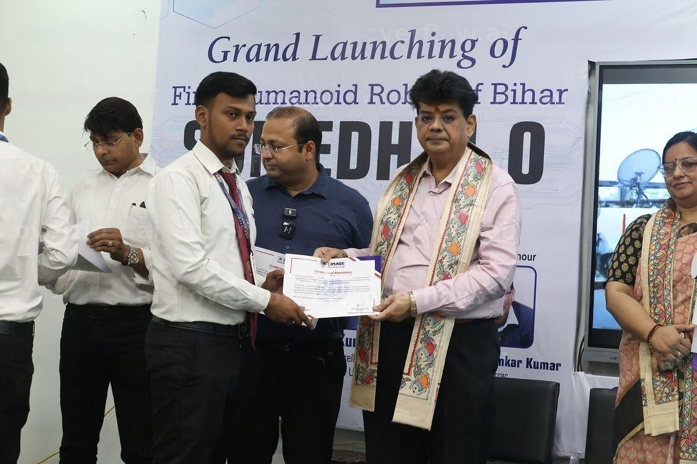

Who I Am & What I Do
Hello and welcome to my portfolio! I'm Subroto from Patna, Bihar, and I'm thrilled you're here. A bit about my journey: I completed my schooling in Patna and recently graduated with a BCA degree from CIMAGE Professional College, a three-year undergraduate program focusing on programming, networking, design, and applied mathematics. When I finished high school, I was uncertain about my career path and sought advice from family and mentors. It was my elder brother who encouraged me to pursue specialized courses in the field of computers rather than following a general course of study.
My initial interest in technology led me to choose BCA, even though I started college with no prior knowledge of programming. In my first semester, I was introduced to Python, which sparked my enthusiasm for programming, even though I didn't yet own a laptop. The hands-on experience was limited to theory, but by the second semester, I had my own laptop and delved into C programming. I worked diligently on about 100–120 pattern-printing exercises, which helped me build a strong foundation in loops and logical thinking. This experience made learning C++ and Java in my third semester relatively easy, as I could quickly grasp the syntactical differences based on my solid understanding of C. The real turning point came in the fourth semester when I discovered Data Structures and Algorithms (DSA). Realizing the importance of DSA in the tech field, I proactively began learning it through YouTube tutorials even before it was formally introduced in class. Though college primarily focused on theoretical knowledge, I was eager to build practical experience. By the fifth semester, I practiced DSA extensively on platforms like LeetCode, Coding Studios, and GeeksforGeeks. Additionally, although the syllabus included accounts and networking, which were outside my comfort zone as a science student, I managed to score well in accounts. Finally, in my sixth semester, I embarked on my capstone project with two classmates. Together, we built *VidesiVilla*, a MERN stack project, where I and another team member worked on the front end, while the third member handled the backend. Although we faced numerous challenges due to time constraints and being new to the technology stack, we sought help from resources like Stack Overflow and various tech communities. Through persistence and collaboration, we successfully completed the project within the given timeframe.
Although web development wasn't part of our curriculum, my journey into building projects led to a genuine interest in the field. I started creating small projects on my own, which allowed me to gain hands-on experience and enhance my skills in web development. Thank you for taking the time to read about my journey!